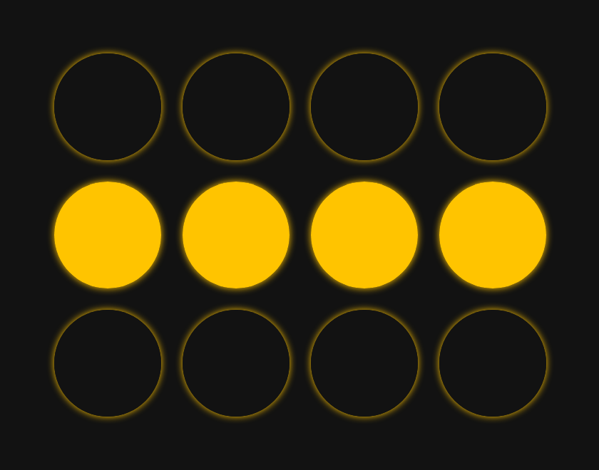

What's a Hopfield Network?
A Hopfield network is a type of artificial neural network. It's not a very useful one in practice, but it does provide an interesting model for how human memory works.
The general idea is that we want to store "memories." Human memories are a vague, complex concept that's hard to define. But in the case of this Hopfield network, we're going to consider an artificial memory to be a specific type of visual pattern. If our network is a 5x5 grid, then a set of three different memories might look like the following:
Think of the network like a group of 25 performers at a light show, each turning a glow-in-the-dark light-stick on and off. Each person is only a single neuron in the greater network, but if we tell them to follow a simple set of rules about when to turn on or off based on what their neighbors are doing, we can create complex network-scale behavior (like doing the wave at a baseball game) and even teach the network as a whole to "remember" patterns that each individual neuron has no awareness of.
We say that we initialize our network when we give it a set of patterns we want it to remember for the future. When we run our network, we want it to morph from any starting formation into some memory. This can mean starting from random noise (our performers have just arrived onstage after a week off, and they want to quickly get into a formation):
It can also mean error correction (such as if one performer has made a mistake, they will recognize it and self-correct):
Here is how it works.
To explain the process, we will use a smaller 3x4 grid for simplicity. We will start off with only one pattern that we want the network to remember. This is the memory we want it to keep:
The first step, initialization, is a long one. This is how our network learns the patterns we give it.
For initialization, we examine all of our neurons as individual pairs. We assign each neuron pair a numerical value that represents the strength of their relationship across all our patterns. What this means is that if two neurons are always "on" together or always "off" together, they have a strong agreeing relationship. If they always behave the opposite of each other (one is always on and one is always off), that is also a strong relationship, but it's a strong disagreeing relationship. But if they sometimes behave the same as each other and sometimes behave differently, then they have a weak relationship.
In the case where we have only one memory, this is pretty simple. All of our relationships are extremely strong, since any two neurons either always agree or always disagree. Here's what this looks like from the perspective of one specific person in our network -- we'll call her Linda.
When learning this memory, when it's time to determine the strength of all of Linda's pairs, she looks around and says "I agree with everyone in my row, and I disagree with everyone outside of my row." Her mental map of how often she agrees with each other person looks like this:
| 0% | 0% | 0% | 0% |
|---|---|---|---|
| 100% | 100% | 100% | |
| 0% | 0% | 0% | 0% |
If we examine the mental map of somebody else in our network, Jerry, his perspective is a little different than Linda's. But they both correspond to the same memory.
| 100% | 100% | 100% | |
|---|---|---|---|
| 0% | 0% | 0% | 0% |
| 100% | 100% | 100% | 100% |
Let's add a second memory to make things more interesting. Instead of just that first memory, we will want the network to remember two patterns:
In the two-memory case, Linda's map will look a little different. She still agrees with her own row no matter what, but now with both memories taken into account, there's a 50/50 chance she'll agree with any person outside her row. This is Linda's new map of how often she agrees with her teammates:
| 50 | 50 | 50 | 50 |
|---|---|---|---|
| 100 | 100 | 100 | |
| 50 | 50 | 50 | 50 |
Now, here's a really interesting fact. Even though the network has twice as many memories to keep track of, it isn't actually used any additional space to store them. Each neuron adjusts its numbers when we add a new memory, but nobody has to keep track of more information. This is a very powerful feature, but as we'll see later, it also produces some major limitations.
Now that we've "learned" all our memories by initializing our network, we're going to run it on different starting formations and see how it behaves.
Let's say we start the network in this formation--very close to one of its two memories, but with a small error:

At each "step," we tell all of our neurons to look around at what everyone else is doing and, based on their mental maps of their relationships, decide whether to remain in their current state or to turn on/off. Each neuron is making a weighted decision based on how closely its relationship map matches its current surroundings.
Let's see how Linda will behave in the first step. According to her relationship map, there's a 50/50 chance she agrees with anybody outside her row. So, the fact that they're all off doesn't influence her either way. However, she knows that she should always agree with the people in her own row. Seeing that they're all on, she thinks "Oh gosh, clearly I've made a mistake!" and turns on.
During that same time, everybody else had made similar calculations of their own. Let's look at the thought process of the person just to the right of Linda at the beginning of our step:
Like Linda, the fact that everyone outside of her row is off doesn't tell her anything about what she should be doing. However, when she looks at her own row, she gets a mixed picture. Two of the people in her row are on, but Linda is off. This sends her mixed signals: she's thinking "I agree with Alfred 100% of the time, and he's on; I agree with Frances 100% of the time, and she's on; and I agree with Linda 100% of the time, but she's off!" So, she weighs the conflicting information and decides that, since most of her row is on, she should probably remain on. So, she doesn't change.
Linda was the only person in our network to change state in the first step. Now, when we run a second step, everyone does the math all over again, but this time nobody changes. So, the network corrected itself with only one step, converging to a memory.
More precisely, we assign a binary value of 1 to represent "on" and -1 to represent "off" to the state of each neuron.
We initialize the network -- the weights that indicate the strength of the relationship between each pair of neurons is a little more complicated than basic percentages.
The weight between any two neurons is calculated by multiplying their values together (their product is 1 if they agree and -1 if they disagree), then averaging the results over the set of memories. So, two neurons that always agree have a weight of 1: they are correlated. Two neurons that always disagree have a weight of -1: they are anti-correlated. Two neurons that agree half the time and disagree half the time have a weight of 0: they are uncorrelated.
When it's time to run the network, each neuron calculates its own weighted sum of the values of the other neurons. So, if we examine the neuron in row 2, column 3, it multiplies the state of each other neuron by the weight it shares with that neuron and sums the result.
(-1*0) + (-1*0) + (-1*0) + (-1*0) + (1*1) + (1*1) + (1*1) + (-1*0) + (-1*0) + (-1*0) + (-1*0) = 3
If the weighted sum is positive, then we say the neuron should be on. Otherwise, it should be off. Once each neuron has determined what state they "should" be in, they each change their state (or stay the same) accordingly.
This is a synchronous update: all neurons update their state in unison.
Now, let's try running the network again, but with a slightly different initial state.

Now what happens in step one is a little strange. The two people in the center of our middle row each see two members of their row on and one off. From each of their perspectives, most people in their row are on, so they both decide they should turn on.
However, for the two folks on the edge, they each see two members of their row off and one on. Since most other people in their row are off, they both decide to turn off.
The entire center row flipped state, and the top and bottom rows did not change. However, now in step two, the entire process repeats itself! The folks in the center deduce they should both be off, while the ones on the edge deduce they should be on.
We end up back where we started -- the process repeats endlessly, and the network never converges to a stable state.
Endless oscillations can be a problem with synchronously updating neurons. The surefire way to prevent oscillations is by updating the network asynchronously. Instead of having all neurons examine the same state of the network and update in unison, only one neuron at a time reads its surroundings and updates itself before the next looks around and does the same.
It doesn't matter what order the neurons go in, as long as each cycle has every neuron update at least once. An asynchronous network will never oscillate -- it will always converge to a fixed pattern.
Finally, one other undesirable situation that can arise is that our network might converge to a pattern that's not a stored memory.
One case of this is converging to a "negative" of a memory:
This occurs because when we initialize our network, we don't distinguish between neurons being "both on" versus "both off" -- only whether neurons "agree" or "disagree." So, our network can't distinguish between a memory and its negative. This isn't that bad, though. The network is still behaving how we hope -- it's converging to a pattern we initialized it with based on the rules we gave it.
However, the situation we really don't like is if the network converges to a state that's neither a memory nor its negative. This happens with greater likelihood if we overload the network -- storing too many memories relative to the number of neurons. If our network is overloaded, not only will it likely converge to false memories, it might not be able to converge to certain true memories at all.
In general, the network behaves at its best when we don't store more than 0.138 memories per neuron.
Citations:
Information Theory, Inference, and Learning Algorithms, by David J. C. MacKay, Cambridge University Press, 2003, pp. 504–520, www.inference.org.uk/mackay/itprnn/ps/504.520.pdf.